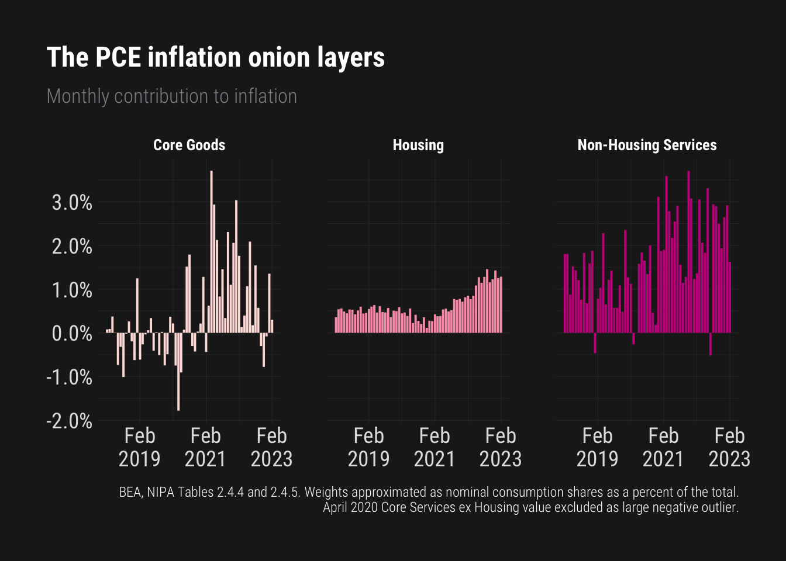
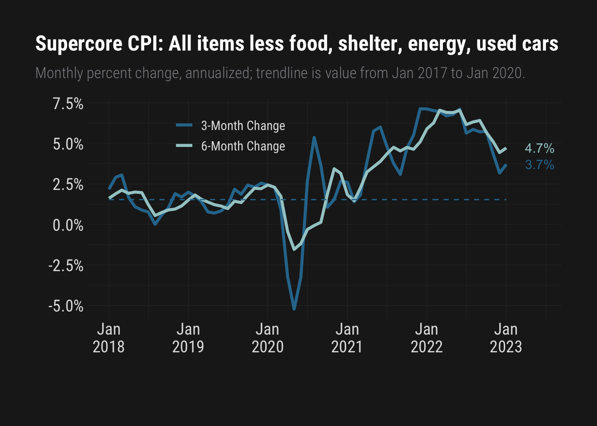
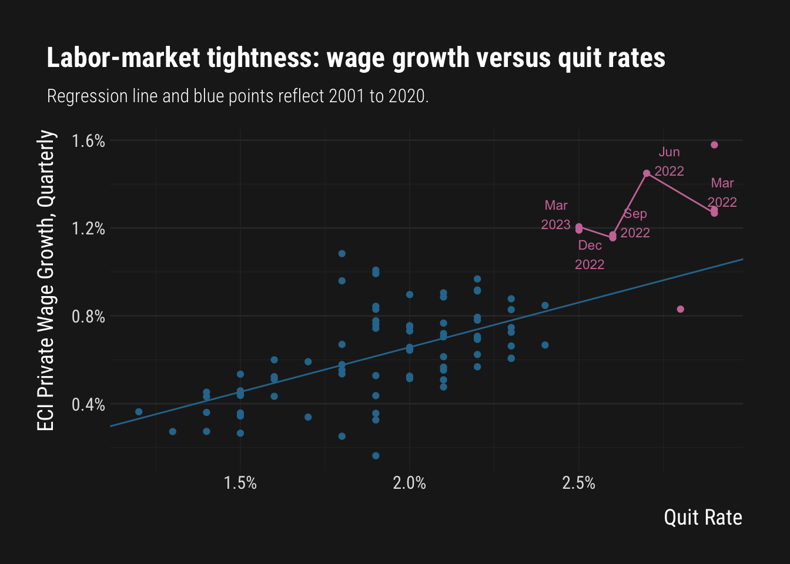

Mike Konczal is director of Macroeconomic Analysis at the Roosevelt Institute, where he focuses on full employment, inequality, and the role of public power in a democracy. He is the author of the recent Freedom from the Market: America’s Fight to Liberate Itself from the Grip of the Invisible Hand, and a co-author, with Joseph Stiglitz, of Rewriting the Rules of the American Economy. A former financial engineer, his writing has been featured in the New York Times, Washington Post, Rolling Stone, Vox, and more. A sought-after commentator on the U.S. economy, he has also appeared on CBS Sunday Morning, All Things Considered, Planet Money, Lovett or Leave It, and elsewhere.
Here are some of the monthly graphics he’s currently watching, along with the R code to reproduce them yourself.
Show the code
library(tidyverse)
library(janitor)
library(scales)
library(hrbrthemes)
library(ggrepel)
# Download data
cpi_data <- read_delim(file = "https://download.bls.gov/pub/time.series/cu/cu.data.0.Current")
cpi_data <- cpi_data %>% clean_names()
cpi_data$value <- as.numeric(cpi_data$value)
cpi_data$series_id <- str_trim(cpi_data$series_id)
cpi_data$date <- paste(substr(cpi_data$period, 2,3), "01", substr(cpi_data$year, 3, 4), sep="/")
cpi_data$date <- as.Date(cpi_data$date, "%m/%d/%y")
series <- read_delim(file = "https://download.bls.gov/pub/time.series/cu/cu.series")
series <- series %>% clean_names()
series$series_id <- str_trim(series$series_id)
items <- read_delim(file = "https://download.bls.gov/pub/time.series/cu/cu.item")
series <- inner_join(series, items, by = c("item_code"))
cpi_data <- inner_join(cpi_data, series, by = c("series_id"))
# Graphic - Three Onion Layer
# Hard code in weights
item_name <- c("Services less energy services", "Shelter", "Commodities less food and energy commodities")
weight <- c(58.187, 34.413,24.006)
weights <- as_tibble(cbind(item_name,weight))
weights$weight <- as.numeric(weights$weight)
onion_graph <- cpi_data %>%
filter(seasonal == "S", date > "2017-12-01", item_name %in% weights$item_name) %>%
left_join(weights, by=c("item_name")) %>%
mutate(item_name = str_replace_all(item_name, "Commodities less food and energy commodities","Core_goods")) %>%
group_by(item_name) %>%
arrange(date) %>%
mutate(Pchange1 = (value/lag(value)-1)) %>%
mutate(Wchange1 = (Pchange1*weight)/100) %>%
mutate(Wchange1a = (1 + Wchange1)^12 - 1) %>%
select(date, item_name, Wchange1a) %>%
pivot_wider(names_from = item_name, values_from = Wchange1a) %>%
mutate(`Rest of core services` = `Services less energy services` - `Shelter`) %>%
select(-`Services less energy services`) %>%
pivot_longer(c(Shelter, `Rest of core services`,Core_goods), names_to = "item_name", values_to = "Wchange1a") %>%
mutate(item_name = str_replace_all(item_name, "Core_goods","Core goods")) %>%
mutate(item_name = factor(item_name, levels = c("Core goods", "Shelter", "Rest of core services")))
onion_datebreaks <- unique(sort(onion_graph$date,decreasing = TRUE))
onion_datebreaks <- onion_datebreaks[seq(1,length(onion_datebreaks),24)]
ggplot(onion_graph, aes(x = date, y = Wchange1a, fill=item_name)) +
geom_bar(stat = 'identity', size=0) +
theme_modern_rc() +
theme(legend.position = "none", legend.title = element_blank()) +
facet_grid(~item_name) +
labs(y = NULL,
x = NULL,
title = "The CPI inflation onion layers",
subtitle = "Monthly Contribution to Inflation",
caption ="Note: 2023 weights applied across years.") +
scale_fill_brewer(palette="RdPu", name = "item_name") +
scale_y_continuous(labels = percent) +
scale_x_date(date_labels = "%b\n%Y", breaks = onion_datebreaks) +
theme(axis.text.x = element_text(size=14), axis.text.y = element_text(size=14),
strip.text = element_text(face = "bold", color="white", hjust = 0.5, size = 10),
strip.background = element_blank(),
plot.title.position = "plot")
Show the code
# Graphic - Supercore
supercore <- cpi_data %>% filter(seasonal == "S") %>%
filter(date > "2014-12-01") %>%
filter(item_name == "All items less food, shelter, energy, and used cars and trucks") %>%
select(item_name, date, value) %>%
mutate(pre_value = value[date=="2019-01-01"]/value[date=="2017-01-01"]) %>%
mutate(pre_value = pre_value^(12/24)-1) %>%
mutate(ThreeMonth = (value/lag(value,3))^4-1) %>%
mutate(SixMonth = (value/lag(value,6))^2-1) %>%
pivot_longer(ThreeMonth:SixMonth, names_to = "time_length", values_to = "change") %>%
mutate(time_length = str_replace_all(time_length,"SixMonth", "6-Month Change")) %>%
mutate(time_length = str_replace_all(time_length,"ThreeMonth", "3-Month Change")) %>%
mutate(last_value = ifelse(date==max(date),change,NA)) %>%
mutate(last_value_pre = ifelse(date==max(date),pre_value,NA))
supercore_datebreaks <- unique(sort(supercore$date,decreasing = TRUE))
supercore_datebreaks <- supercore_datebreaks[seq(1,length(supercore_datebreaks),12)]
ggplot(supercore, aes(date, change, color=time_length, label=label_percent(accuracy=0.1)(last_value))) +
geom_line(size=1.2) +
theme_modern_rc() +
geom_line(aes(date,pre_value), linetype="dashed", color="#2D779C") +
labs(x="", y="",
title="Supercore CPI: All items less food, shelter, energy, used cars",
subtitle = "Annualized values, trendline is value from 2017 to 2019.",
caption = "") +
scale_y_continuous(labels = percent) +
scale_x_date(date_labels = "%b\n%Y", breaks = supercore_datebreaks) +
theme(legend.position = c(0.35,0.85), legend.title = element_blank()) +
theme(axis.text.x = element_text(size=14), axis.text.y = element_text(size=14),
legend.text = element_text(size=11)) +
scale_color_manual(values=c("#2D779C", "#A4CCCC")) +
geom_text(show.legend=FALSE, nudge_x = 155) +
theme(plot.title.position = "plot")
Show the code
library(tidyverse)
library(janitor)
library(scales)
library(hrbrthemes)
library(ggrepel)
jolts_data <- read_delim(file = "https://download.bls.gov/pub/time.series/jt/jt.data.1.AllItems")
jolts_data <- jolts_data %>%
clean_names()
jolts_data$value <- as.numeric(jolts_data$value)
jolts_data$series_id <- str_trim(jolts_data$series_id)
jolts_data$date <- paste(substr(jolts_data$period, 2,3), "01", jolts_data$year, sep="/")
jolts_data$date <- as.Date(jolts_data$date, "%m/%d/%Y")
eci_wages <- read_delim(file = "https://download.bls.gov/pub/time.series/ci/ci.data.1.AllData") %>%
clean_names()
eci_wages$value <- as.numeric(eci_wages$value)
eci_wages <- eci_wages %>%
mutate(month = case_when(
period == "Q01" ~ 3,
period == "Q02" ~ 6,
period == "Q03" ~ 9,
period == "Q04" ~ 12))
eci_wages$date <- paste(eci_wages$month, "01", eci_wages$year, sep="/")
eci_wages$date <- as.Date(eci_wages$date, "%m/%d/%Y")
# Graphic Set 1 : Sets Up Calculations
# Openings and Quits versus ECI Wages
JoltsMerge <- jolts_data %>% filter(series_id == "JTS000000000000000QUR") %>% mutate(value = value/100) %>%
select(date, quitsR = value)
merged <- eci_wages %>% filter(series_id == "CIS2020000000000I") %>% mutate(value = value/lag(value)-1) %>%
select(ECI_growth = value, date) %>%
inner_join(JoltsMerge, by=c("date")) %>%
filter(!is.na(ECI_growth)) %>%
mutate(Is_2021_to_2022 = (date >= "2021-01-01"))
merged_prior <- merged %>% filter(date < "2021-01-01") %>% lm(ECI_growth ~ quitsR, data=.)
merged %>%
mutate(values_last = if_else(date >= "2022-01-01", date, as.Date(NA))) %>% mutate(values_last2 = as.character(format(values_last, "%b\n%Y"))) %>%
mutate(Is_2021_to_2022_v = if_else(date >= "2022-01-01",ECI_growth,as.numeric(NA))) %>%
ggplot(aes(quitsR, ECI_growth, color=Is_2021_to_2022, label=values_last2)) + geom_point() + theme_modern_rc() +
geom_abline(intercept = merged_prior$coefficients[1], slope=merged_prior$coefficients[2], color="#2D779C") +
geom_text_repel(size=3) +
geom_path(aes(quitsR,Is_2021_to_2022_v)) +
labs(x = "Quit Rate",
y = "ECI Private Wage Growth, Quarterly",
title = "Labor-market tightness: wage growth versus quit rates",
subtitle = "Regression line and blue points reflect 2001 to 2020.",
caption =NULL) +
theme(panel.grid.major.y = element_line(size=0.5)) +
theme(plot.title.position = "plot") +
scale_y_continuous(labels = percent) +
scale_x_continuous(labels = percent) +
theme(axis.title.x = element_text(size=14, color="white", vjust=-1.5), axis.title.y = element_text(size=14, angle = 90, vjust = 3),
plot.subtitle = element_text(size=12, color="white"), legend.position = "none") +
scale_color_manual(values=c("#2D779C", "#CC79A7"))
Praise for Freedom From the Market:

“The Roosevelt Institute’s Konczal is one of the warriors in this fight, arguing fiercely for the need to set much narrower limits on what is left to markets than has been the case in recent decades. A powerful polemic.”
- Martin Wolf, Financial Times
“By identifying an alternative grammar, one that is grounded in the American past, Freedom from the Market provides a way out of the political cul-de-sac created by the failure of the market to deliver on its promises of ‘freedom.’”
- Molly Michelmore, Democracy: A Journal of Ideas
“Freedom from the Market is an impressive book, easily one of the best I’ve read in the past several years. I cannot recommend it highly enough.”
- Matt Mazewski, Commonweal
“terrific book.”
- Jamelle Bouie, New York Times